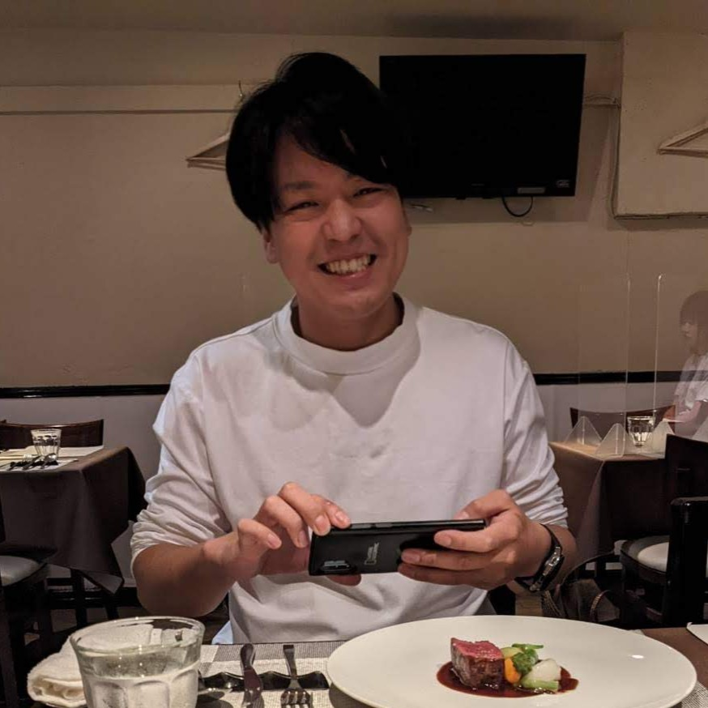

混沌とした課題を構造化し、
あなたの「真の核」を見つけ出す。
何から手をつけていいか分からない混沌。表面的なノウハウだけでは解決しない根本的な閉塞感。
私たちは、その状態を「構造化」し、あなた自身の中に眠る「答え（The Core）」を共に引き出します。
PIVOT & QUEST は、枠の向こう側を描き続ける人のための、思考と行動の伴走パートナーです。
課題の構造化と自己理解を深め、人生や事業の核（The Core）を発見する伴走型プログラム。現状の混沌を整理し、具体的なネクストアクションへと導きます。
AI活用・DX支援・SEO戦略・動画制作まで、事業の成長に必要な「実行」をトータルでサポート。単なる導入に留まらず、各施策を論理的に構造化し、持続可能な成果を創出します。
私立中高などの教育機関に向けた、「探究学習」プログラムの企画・開発および実施支援。生徒が自らのルーツに向き合い、本質的な「問い」を立てるための教育現場を共創します。

Founder / Representative
論理と思考の整理を通じ、複雑に絡み合った課題を構造化するプロフェッショナル。
「人は誰でも、自分の中に答えを持っている」という信念のもと、ビジネスと自己実現の壁に直面する多くのステークホルダーに伴走。表面的なスキルやテンプレートではなく、その人が持つ真の核（The Core）を引き出し、言語化・体系化することで、唯一無二の価値創出を支援している。